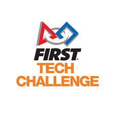

Welcome to my Robotics Journey
Explore my experiences, projects, and contributions in the world of robotics. From my early days as a student to my current role as a FIRST Technical Advisor, this page highlights the milestones and achievements that have shaped my passion for robotics.
Volunteer Experience

NYC FIRST
August 2020 — PresentFIRST Technical Advisor | (September 2025 — Present)
- Lead technical operations at official FIRST Robotics events, ensuring full compliance with safety, gameplay, and AV standards outlined by FIRST HQ.
- Oversaw venue infrastructure and AV system setup, collaborating with IT and facility teams to ensure competition readiness and technical integrity.
- Managed deployment, calibration, and teardown of the official FTC field, coordinating closely with FTAAs and Field Supervisors to maintain system accuracy and component reliability.
- Provided advanced diagnostics and real-time troubleshooting for robot communication, control system, and field hardware/software issues.
- Partnered with referees and scorekeepers to validate match data and resolve gameplay anomalies efficiently, ensuring accurate scoring and fair competition.
- Maintained close communication with FIRST and local partners to escalate and resolve critical issues, enabling seamless event execution.
- Supported event flow by assisting with field reset, team queuing, and match logistics when required.
Robot Inspector | (September 2023 - Present)
- Conducted thorough robot inspections at official events, ensuring compliance with safety, design, and gameplay regulations as outlined by FIRST HQ.
- Evaluated robot designs for adherence to size, weight, and component restrictions, providing detailed feedback to teams on necessary modifications for compliance.
- Assessed the safety of robot mechanisms, including moving parts and electrical systems, to ensure a safe competition environment for all participants.
- Collaborated with teams to clarify inspection criteria and assist them in understanding and meeting the requirements for successful robot approval.
- Maintained accurate records of inspection results and communicated findings effectively to teams and event staff.
FIRST Technical Advisor Assistant | (September 2023 — August 2025)
- Supported the FTA in configuring and maintaining the FTC field electronics, network infrastructure, and control systems during regional and district events.
- Troubleshot robot-field communication issues (FMS, driver station, radio, etc.), ensuring teams maintained connectivity and system stability during matches.
- Provided on-site technical assistance to teams, guiding them through debugging processes, firmware updates, and hardware inspections.
- Collaborated with referees, scorekeepers, and the event management system (EMS) team to maintain synchronization between match data and real-time scoring.
- Assisted with the setup and validation of field sensors, control cabinets, and critical infrastructure prior to competition.
- Contributed to a collaborative and technically supportive environment, reinforcing FIRST values while optimizing competition reliability.
Master of Ceremonies (MC) | (September 2023 — December 2023)
- Served as the Master of Ceremonies (MC) for the NYC FIRST FTC Qualifiers, engaging the audience and maintaining a lively atmosphere throughout the event.
Queuer | (Sept 2022 — September 2023)
- Efficiently organized and managed the flow of teams to ensure timely and orderly transitions to the competition field, enhancing the overall event experience and minimizing delays.
Mentorship Experience

FIRST Tech Challange Mentor
Hydraulic Hydras (FTC 9384) & Cephalopods (FTC 8088)
September 2024 — PresentMentored two FTC teams, guiding students through the design, build, and programming process to develop competitive robots for regional and state competitions.
Electric Eagles (FTC 23983)
September 2025 — PresentMentored a rookie FTC team, providing foundational guidance on robot design, programming, and competition strategy to help them successfully navigate their first season.